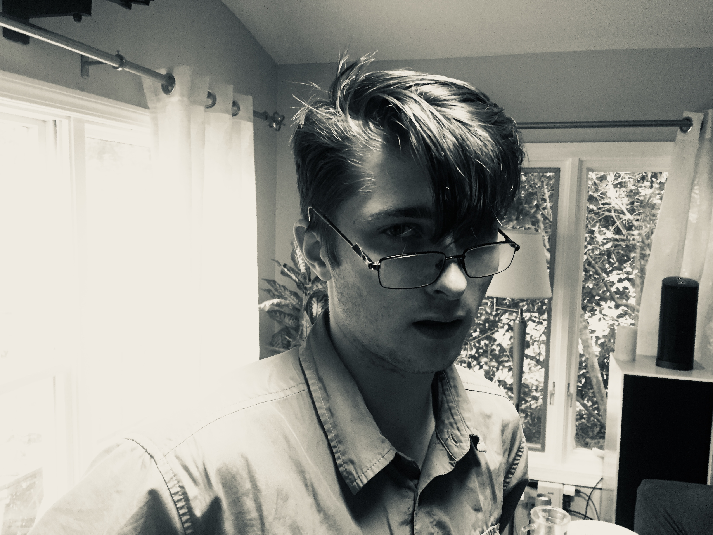

The Deal
Mike and Tom are travelling the country this summer, and as an alaternative to telling the same stories over and over, it makes sense to just put them here! We will of course tell them to tose that are interested, but if you'd like to polished version, this is the place for you. Many thanks to those that are so interested. Your encouragement is invaluable.
Check it out
All the posts are linked to on the contents page. Tom's working on a more ordinary feed for the home page. It's all a work in progress.
And also,
We're taking the summer to catch up on the things we want to read, and are consequently inclined to write and think about the things we're reading. For content-oriented stuff (philosophizing, and pontificating) check out ruminations.
Michael Abbott
Is a licensed bullshitter of the California State BSA as well as an avid fan of the Cincinatti Ravens, his favorite basketball club.
He goes to school at the University of Bochester, Irving. Next year will be his last year there, after which Mike plans to continue procrastinating his life by going to grad school. He has many interests, and hopes that this blog will give him the platform he's always wanted to disseminate anti-vegan propaganda, and inform the brainless masses of the dangers of radon and carbon monoxide poisoning.

Tom Dailey
Tom puts the "Velma" in "Travelmate". He's got hair and he's not afraid to burn it. He's got a Rudin textbook and he's not afraid to learn it. He's got an old cream package from a diner in his pocket and he's not afraid to churn it. Watch out! He'll smack ya silly!
Tom left highschool early so that he could go somewhere more important, which he then proceeded to leave early. But he went to another, yet more important place, which again he left early, but this time he at least left with a little doctor's note letting people know he's allowed to leave places early because he can do Math. He's passionate about microwave dinners, and he hopes to one day get over his fear of microwave ovens. Check him out on yahoo!